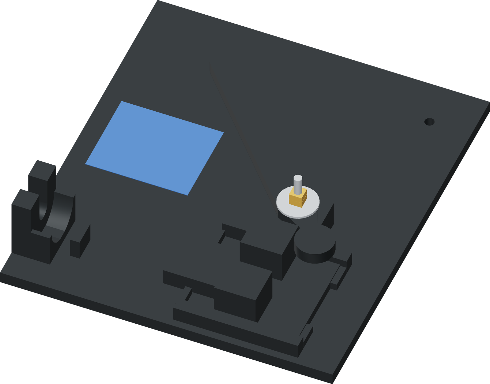

Use the fixed palm area
One hand holds the stationary base while the other moves the press lever. Keep the hand away from the moving ram and pivot.

- Set the base flat on a firm bench with room for the shank at the left and the free tube to the right.
- Place the opposite hand on the fixed palm area beside the donor, on the side away from the faucet lever. Keep fingers outside the ram and press-lever paths.
- If that hold cannot keep the base stationary, use an existing bench clamp or mounting bolts at the base's two open mounting holes.
Finished when
The base remains flat and stationary while the empty press lever moves through its stroke.